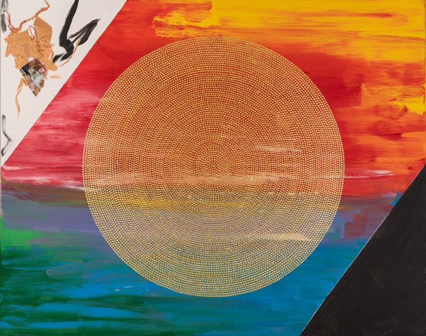

Visual arts is a very large subject with many different fields of study such as ; painting, photography, filmmaking, pottery, basically anything that is appealing to the eye can be considered as visiual art. In addition, visual art is different from auditory art. Visual art mainly emphasizes people's visual feelings. Therefore, art forms such as film and television art that include both visual art and auditory art are usually classified into the category of comprehensive art forms.